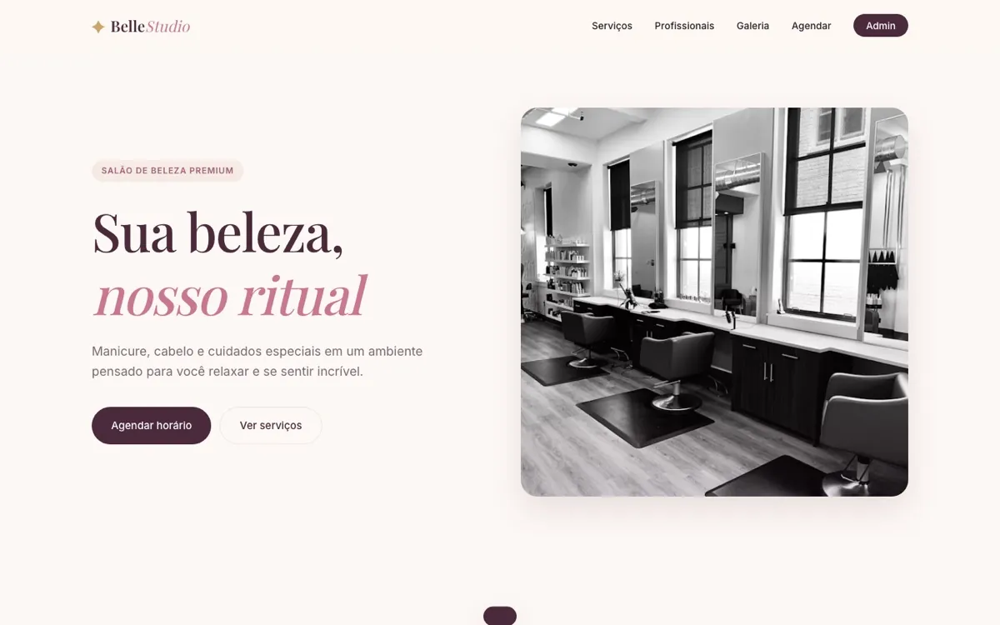

Site bonito não vende sozinho: o que faz um site trazer cliente
Velocidade, clareza e um caminho curto até o contato valem mais que animação.
Higor Cabral
Ler artigo
A gente cria aplicativos
Entendemos a dor da sua empresa e entregamos a solução certa, do site ao sistema completo, para qualquer porte e qualquer setor.


Construído e operado com parceiros digitais de confiança
Os sinais de que a tecnologia parou de ajudar e virou um peso na operação.
Planilhas, copia e cola e conferência na mão. Horas por semana no que o sistema faria sozinho.
Cada área com uma ferramenta diferente e nenhuma delas falando com a outra.
Site desatualizado, nenhum app e o cliente sem um canal digital para comprar.
Relatório que leva dias para sair e número em que ninguém confia na hora de decidir.
Quatro etapas. Qualquer desafio.
Conversa antes de código.
Por que somos a escolha certa para resolver a tecnologia da sua empresa?
Conciliação bancária executada sem intervenção
Pedidos do ERP sincronizados com o estoque
Painel do Power BI atualizado com o fechamento
Acesso de ex-colaborador revogado em todos os sistemas
ERPs, CRMs, sistemas de gestão e portais feitos para o seu processo, não o contrário.
Produtos digitais completos, do protótipo validado ao lançamento e à evolução contínua.
Apps web e mobile para a sua equipe em campo e para os seus clientes.
Sites rápidos e bem posicionados, com formulários ligados direto ao seu comercial.
Tarefas repetitivas rodando sozinhas e sistemas conversando entre si, sem copia e cola.
Painéis no Power BI com dado confiável, atualizados sozinhos, para decidir com o número certo.
Não são mockups. São sistemas navegáveis que construímos para testar ideias e resolver problemas reais.
Onde o dinheiro entra, sai e fica preso, num painel só.
Pipeline, follow-up e relatórios de vendas.
Ver casoAgenda online e lembretes automáticos.
Ver casoOrdem de serviço digital e orçamentos.
Ver casoCódigo de barras, mínimo e curva ABC.
Ver casoOs quatro projetos acima são demonstrações navegáveis, com dados fictícios.

Você sabe o que vai pagar antes de assinar. A condição é o escopo acordado, sem taxa escondida.
O que você pede entra na fila junto com o roteiro do produto, ordenado por impacto real na sua operação.
Sem camada de atendimento. Você fala com quem escreveu o sistema e tem resposta em até 24h úteis.
Exportamos tudo o que é seu em formato aberto, a qualquer momento. Sem lock-in.
Escrevemos por extenso como os dados são guardados, quem acessa o quê e o que acontece em caso de descontinuidade.
Ler sobre segurançaTI corporativa, automação, integrações e sistemas. É quem conecta o que já existe na empresa ao que precisa passar a funcionar sozinho.
Dados, riscos, controles, segurança e operação. É quem olha para o sistema procurando onde ele falha antes de o cliente encontrar.

Velocidade, clareza e um caminho curto até o contato valem mais que animação.


Começar pequeno, ver funcionando e só então decidir o resto.
Ler artigo
Nem todo problema pede um app na loja. Um guia prático para escolher certo.
Ler artigo
Quando a planilha vira o sistema da empresa, cada ajuste vira risco.
Ler artigoConteúdos demonstrativos para esta prévia — em breve, artigos completos.
As dúvidas que mais aparecem na primeira conversa.
Conta pra gente o problema, não a solução. A primeira conversa é gratuita.
Vamos ler com calma e responder em até 24h úteis.